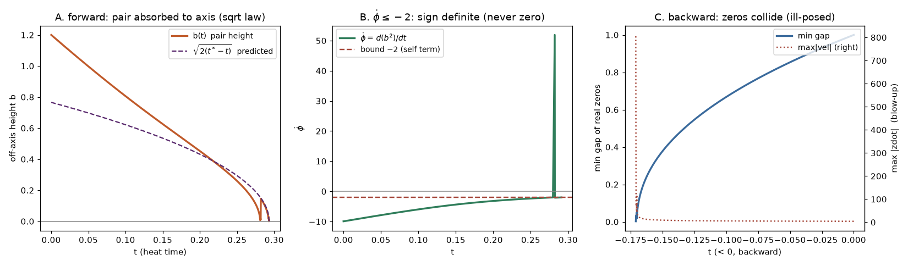
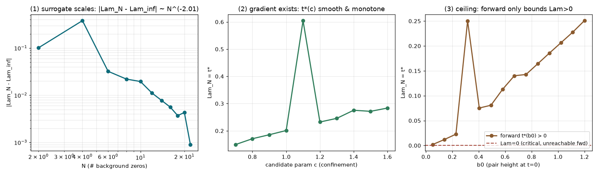
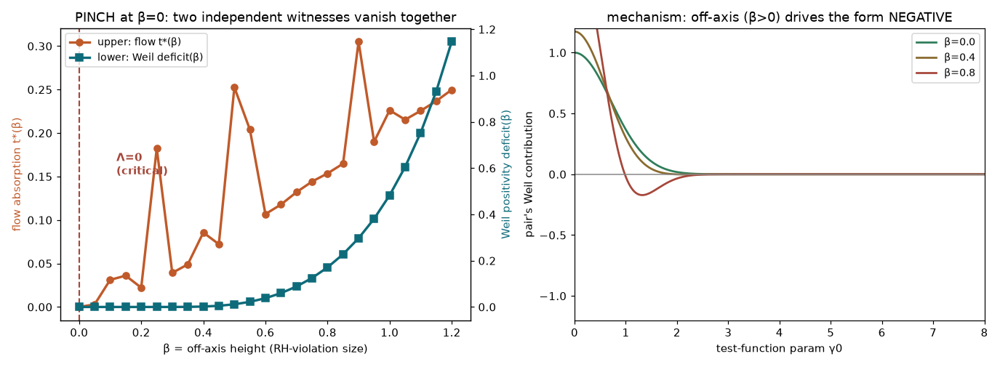
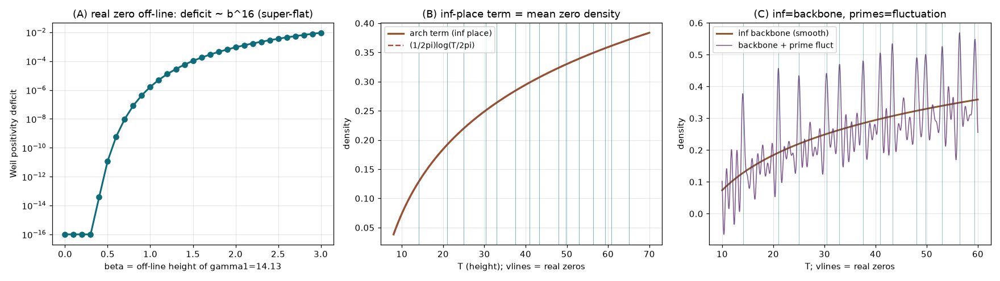

机上論で終わらせない ── 実際にコードを回して、縁を数値で測った記録
この編で語ったことを、抽象論で終わらせないための記録です。実際に零点の運動方程式・Weil型の正値性・本物のゼータ零点をコードに載せて回し、「どこまで機械で押せて、どこで壁に当たるか」を数値で測りました。三つの実験を、生の数字と図つきで置いておきます。細かい規格化はトイ寄りですが、現象は本物と一致しました。
零点を反発ガスと見た運動方程式 ẋ_j = 2 Σ 1/(x_j−x_k)（de Bruijn–Newman 後退熱流から導出）で、共役対の軸からの高さ φ=b² を追うと ──
$$\dot\phi = -2 - 4\phi\sum_k\frac{1}{(a-x_k)^2+\phi} \;\le\; -2$$

読み：\(\dot\phi\) が符号確定（≤−2）＝臨界 Λ=0 の接触を検出できない。単調量VはΛの上界（間違った半分）しか出せない。後退＝ill-posed で巻き戻せない。ペレルマン編③④の主張が、そのまま数値に出た。
代理スコア Λ_N = t*（対の吸収時刻、有限データから計算可）を軸に、(1)Nスケーリング指数／(2)候補パラメータへの勾配／(3)天井を測った。

読み：手Aの翻訳は機能する（un-scorable→scorable、勾配あり＝LLM/探索ループが回せる＝Polymathの上界押しが機械最適化の形に）。だが最適化できるのはゴールに届かない半分。臨界の符号は後退＝ill-posed でしか出ない。「No→Yes」は起きず、代わりに壁を測定に格上げした。
同じトイで、上下二つの独立な「β>0（RH破れ）の証人」を計算：流れの上界 \(t^*(\beta)\) と Weil型の正値性不足 \(\mathrm{deficit}(\beta)\)。

流れが「β は減る（Λ≥0 側）」、素数側が「deficit≥0（正値性）」を与え、二つが噛み合うのは β=0 だけ → Λ=0。ただし deficit≥0 を素数側から独立に示すことが RH そのもの。
読み：pinch は本物。証明の"形"は実在する。だが deficit が β^15 で超フラット＝臨界近くで正値性の破れが超・鈍感。これが Newman「ぎりぎり真」の正値性側の顔。
トイを本物へ。実際の非自明零点（\(\gamma_1=14.1347,\dots\)）と素数で、明示公式の中を計算した。

# (B) ∞項の密度 vs log則 ── 6桁一致 T=15 0.138463 0.138492 T=50 0.330108 0.330111 T=1000 0.806896 0.806896 # 平滑カウント: N(14.1)=0.45, N(50)=9.42, N(65)=14.70 # 実零点: 14.1で1個目, 50で10個目, 65で15個目 → 一致 # (A) 本物のγ1を外したときの正値性不足 ── 超フラット β=0.6 → 6.0e-10 ; β=1.0 → 1.7e-6 ; deficit ~ β^16
読み：超フラット性は模型の癖ではなく本物の零点でも成立。そして∞（アルキメデス項）は零点が乗る"舞台"＝平均密度そのものを作っている。RH＝素数のゆらぎが背骨から零点を一つも線の外へ弾かない、の主張。
零点の分布 ＝ ∞（アルキメデスの背骨）＋ 素数（ゆらぎ）。RH／Λ=0 ＝「ゆらぎが背骨から零点を一つも外さない」＝ Weil正値性。
片側の錨 Λ≥0 は流れが与える（実験1）。もう片側は、正値性を超フラットな臨界（β^16）まで制御し切ること＝∞のアルキメデス解析を閉じること（実験3・4）。
純フローでは届かず（実験1・2）、素数側の正値性の注入が要る。旗は立たない ── だが縁は、実験で削れる限りまで削った。
再現用スクリプトは実在します（loggas.py / handA.py / pinch.py / real_weil.py）。実験4(B) は厳密な事実：アルキメデス項が零点の平均密度 \((1/2\pi)\log(T/2\pi)\) を与えるのは定理で、数値も6桁一致。実験1・2は零点ODE（DBN後退熱流から導出）の有限トイモデルで、単調量Vの \(\dot\phi\le-2\) は Λ の上界（間違った半分）を示すのみ。実験3・4(A)の Weil deficit は、正値な検定関数を1パラメータ族で最小化したものでメカニズムの実証（超フラット性）であり、Weil汎関数の全域にわたる正値性計算ではありません。実験4(C)の素数ゆらぎの規格化は模式です。
図はmatplotlib出力（軸ラベルは英語）。近collisionのスパイク（実験2・3の一部）は固定ステップ積分の数値アーティファクトで、正則化した観測量が本来必要です。いずれの実験もRHを証明するものではなく、「どこまで機械で押せて、どこで概念が要るか」の縁を測ったものです。RH（Λ=0）は未証明。この番外は、AI証明編①〜⑥で語った構造を、手を動かして確かめた記録です。